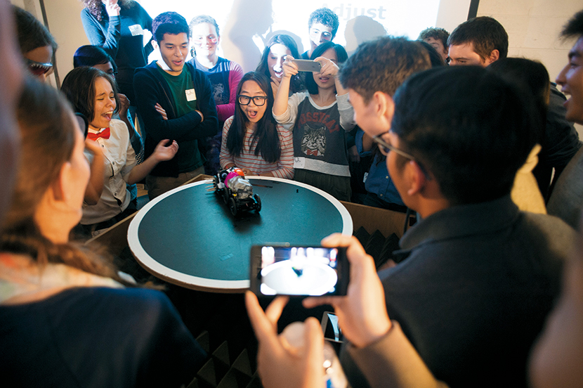

密涅瓦大學，培養無懼未來的能力

扎克（Zachary Witzel）高中畢業時，一點也不急著上大學，他計劃壯遊1年，先到中國學幾個月華語，之後隨意看看世界。旅程結束後，再回美國申請離家最近的名校：維吉尼亞大學（University of Virginia）。
高中4年，扎克擔任過維吉尼亞州福爾斯徹奇市（Falls Church）學生代表、喬治梅森高中學生會主席；曾參加模擬聯合國會議、資安競賽、街友扶助組織義工，2015年以全校第一名成績畢業，還通過國際文憑大學預科課程（IBDP）。憑這些經歷，就算在海外流浪得更久，一定還是有名校敞開雙臂歡迎他入學。